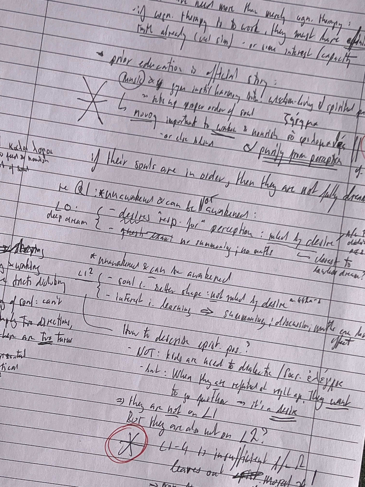

01About
I am a Reader in Philosophy at King’s College London, where I have worked since 2011. My research centres on ancient Greek philosophy — in particular the ethics, epistemology, and moral psychology of Plato and Aristotle — and on cross-traditional work connecting ancient Greek and Buddhist philosophy.
A central thread of my work concerns pleasure, happiness, and the highest good in Plato and Aristotle, including ancient value theory more broadly and altered states of mind — drinking, dreaming, meditation, divine inspiration — as they figure in ancient authors. A second thread explores contemplation and the life of philosophy in Plato and Aristotle. A significant part of my research is also devoted to Indian philosophy, especially later Buddhist schools, and I engage comparatively with figures such as Vasubandhu.
My current projects explore the role of contemplation in Plato and Aristotle, the connection between law and the divine in Aristotle’s practical philosophy, and a problem about dreaming in Plato’s Republic. I am, moreover, thinking about the role of theoretical knowledge in becoming morally good, as well as the relevance of desire for acquiring the highest theoretical insight. This interest benefits from engagement with Buddhist philosophers.
I am co-editor (with Mehmet Erginel) of New Perspectives on Plato’s Pleasures, forthcoming with Brill.

02Research
Research Interests
Area of Specialisation: Ancient Greek Philosophy · Areas of Competence: Buddhist Philosophy · Ethics · Epistemology · Modern Philosophy
Three Main Tracks
1. Pleasure in Plato and Aristotle. Much of my published work centres on theories of pleasure and the highest good in ancient Greek philosophy. This includes close study of Nicomachean Ethics X, the treatment of pleasure in Plato’s Republic and Philebus, Eudoxus’ hedonism, and ancient value theory more broadly. A recurring question is how pleasure, contemplation, and happiness relate to one another in the ancient ethical tradition.
2. Contemplation and the life of philosophy in Plato and Aristotle. A second track asks what role theoretical knowledge and the philosophical life play in Plato’s and Aristotle’s ethics and political philosophy. This involves work on the place of the divine and of law in Aristotle’s practical thought, and how altered states — dreaming, intoxication, divine inspiration — illuminate the boundaries of philosophical understanding.
3. Buddhist philosophy, especially Vasubandhu. A significant part of my research engages with Indian philosophy, in particular the later Buddhist philosopher Vasubandhu. Comparative work with Plato has explored dreaming and perception, theories of personal identity, and no-self doctrines. I was a member of the Buddhism-Platonism research group, and this cross-traditional engagement continues to inform my thinking about knowledge, selfhood, and the limits of experience.
Work in Progress
- ‘Law and the divine in Aristotle’ [under review]
- ‘Sipping Wisdom: the virtues of intoxication in Plato’s Laws’ [conference draft]
- ‘Contemplation in Aristotle’s other ethics’ [chapter, forthcoming in Aristotle’s Other Ethics, OUP]
- ‘Pleasure in Plato’s Republic: Beyond Remedy?’ [forthcoming in New Perspectives on Plato’s Pleasures, Brill]
- ‘Dreaming in Plato’s Republic’ [journal article; draft available on request]
Edited Volume
- New Perspectives on Plato’s Pleasures, edited with Mehmet Erginel. Brill [accepted]
03Publications
Full record: ORCID · KCL Research Portal. Open-access versions of many papers are available via my PhilPeople profile.
Books
- Aristotle’s Nicomachean Ethics Book X Cambridge University Press 2020
- The Highest Good in Aristotle and Kant, ed. with Ralf Bader Oxford University Press 2015
Articles & Chapters
- ‘No-self in Plato and Vasubandhu’ In Zilioli & Westerhoff (edd.), Ancient Greek and Indian Buddhist Philosophers on Reality and Selfhood, Bloomsbury, 165–180 2026
- ‘“I can’t get no satisfaction”: Pleasure and happiness in Republic 585–7’ In McCabe & Trépanier (edd.), Rereading the Republic, Edinburgh UP, 271–290 2025
- ‘Dreaming, perception, and knowledge in Plato’s Theaetetus and Vasubandhu’s Twenty Verses’ In Carpenter & Harter (edd.), Crossing the Stream, Leaving the Cave, OUP, 49–72 2024
- ‘On philosophy in Plato’s Republic: a Critical Note of Sarah Broadie’s “Plato’s Sun-Like Good”’ British Journal for the History of Philosophy, 1279–88 2023
- ‘Eudoxus’ hedonism’ In Coope & Sattler (edd.), Ancient Ethics and the Natural World, CUP, 185–202 2021
- ‘Republic 585b–d: argument and text’ The Classical Quarterly 68(1): 53–68 2018
- ‘Is Aristotle a virtue ethicist?’ In Harte & Woolf (edd.), Rereading Ancient Philosophy, CUP, 199–220 2017
- ‘Aristotelian Piety Reconsidered’ CHS Research Bulletin 2017
- ‘Aristotle against Delos: Pleasure in Nicomachean Ethics X’ Phronesis 61(3): 284–306 2016
- ‘The content of happiness: a new case for theôria’ In The Highest Good in Aristotle and Kant, OUP, 36–59 2015
- ‘Processes as pleasures in EN vii 11–14: a new approach’ Ancient Philosophy 33(1): 135–157 2013
- ‘An inconsistency in Plato’s Philebus?’ British Journal for the History of Philosophy 21(5): 817–837 2013
Selected Reviews
- Review of R. Majithia, The highest good in the Nicomachean Ethics and the Bhagavad Gita, Bryn Mawr Classical Review 2025
- Review of B. Reece, Aristotle on happiness, virtue, and wisdom (with Daniel Ferguson), British Journal for the History of Philosophy, 1502–7 2024
- Review of J.K. Ward, Searching for the Divine in Plato and Aristotle, Classical Review 2023
- Review of R. Kamtekar (ed.), Oxford Studies in Ancient Philosophy: Virtue and Happiness, Philosophical Review 124(2): 292–5 2015
- Review of R. Weiss, Philosophers in the Republic, Mind 123(489): 256–60 2014
04Teaching
My teaching at King’s College London covers all areas of ancient Greek philosophy and some areas of contemporary ethics, at both undergraduate and postgraduate level. I aim to bring students into direct contact with primary texts through close reading and thinking through the arguments rather than simply surveying them.
Graduate Teaching
At graduate level I have taught research seminars and MPhilStud modules, often co-taught with colleagues. Recent and current topics include:
- Meditations on Dreaming: Plato, Descartes, Vasubandhu — a 5-week MPhilStud seminar exploring scepticism and the philosophy of mind across traditions
- Pleasure — research seminar co-taught with Professor Mark Textor
- The Virtues in Aristotle’s Ethics — intercollegiate seminar co-taught with Professor Anthony Price (Birkbeck)
- Greek Text Seminar — text-based seminar for graduate students in ancient philosophy at KCL and UCL, with a focus on translation and analysis mostly of Plato’s and Aristotle’s texts
Undergraduate Teaching
My undergraduate modules include:
- Introduction to Greek Philosophy — covering Early Greek Philosophy, Plato and Aristotle, as well as Hellenistic Philosophy
- Greek Philosophy: Plato — usually covering two to three dialogues
- Greek Philosophy: Aristotle — survey course that attends to theoretical and practical philosophy
- Hellenistic Philosophy — Epicureanism, Stoicism, and Scepticism
- Topics in Greek Philosophy — most recently: Aristotle’s Politics
- Environmental Ethics — co-taught with Eliot Michaelson; open to all college students. This module explores the philosophical foundations of our obligations to the natural world, to future generations, and to non-human animals. It connects directly to ongoing debates about climate change, sustainability, and environmental policy.
- Introduction to Philosophy: Ethics — primarily for PPE, PPL, and Liberal Arts students
PhD Supervision
I welcome enquiries from prospective PhD students working in ancient Greek philosophy, ethics, or cross-traditional philosophy involving ancient Greek and Buddhist thought. Please feel free to get in touch to discuss potential projects.
05Outreach & Public Engagement
To me, philosophy isn’t so much an academic discipline as a way of life. Philosophy matters outside of the academy, and I enjoy taking it there. I have given talks and participated in events at arts venues, public forums, schools, and community settings.
Selected Events
- ‘Do animals have moral status?’ — talk at Reigate College 2024
- Panelist, ‘Offsetting: what should King’s College do?’ — public debate, King’s College London 2024
- ‘Buddhist perspectives on euphoria’ — Art and the Emotions, National Gallery London 2022
- ‘The Philosophy of well-being’ — Florence Nightingale School of Nursing and Midwifery, King’s College London 2022
- ‘Philosophical Perspectives on Sustainability’ — King’s Sustainability & Climate lecture series 2021
- ‘Well-being and the shape of life’ — video for Way Out TV, Philosophy in Prison initiative 2020
- ‘Aristotle Now’ — discussion with Sophia Connell and Sophie-Grace Chappell, Forum for Philosophy, LSE 2019
I also give talks in schools on topics in ethics and ancient philosophy. If you would like to discuss a visit or event, please get in touch.
06Academic CV
Employment
Education
Selected Grants & Fellowships
Selected Recent Presentations
Languages
German · English · French · Latin · Ancient Greek · Sanskrit
Editorial & Professional Service
07Contact
I am happy to hear from researchers, prospective students, and anyone with questions about my work.
Email: joachim.aufderheide@kcl.ac.uk
Address: Philosophy Department, King’s College London, WC2R 2LS
ORCID 0000-0001-7080-4256 · PhilPeople · KCL Research Portal